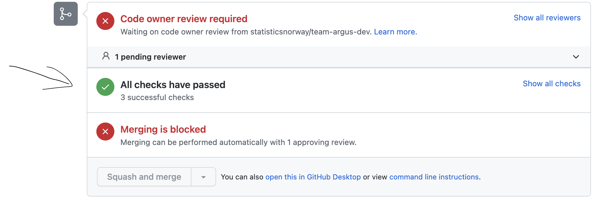

Automatisering
For å redusere tilgang til PII1 oppfordres alle Dapla-team til å ha en automatisert prosessering av kildedata. Dapla tilbyr dette som en 100% selvbetjent løsning. Kildedata (Standardutvalget 2021, 5) prosesseres til inndata gjennom et gitt sett av operasjoner(se Figur 1). Kildedataprosesseringsløsningen som tilbys på Dapla er bygget på at hver kildedatafil behandles individuelt. Mer komplekse operasjoner som går på tvers av flere filer bør utføres på inndata eller senere datatilstander.
Det er kun teamets kildedataansvarlige som skal aksessere kildedata.
Teamets kildedataansvarlige tar ansvar for å prosessere kildedata til inndata på en forsvarlig måte.
Operasjoner som inngår i kildedataprosessering

Inndata er kildedata som er transformert til SSBs standard lagringsformat. Variabelnavn og -innhold er uendret bortsett fra at:
- Direkte identifiserende variabler (f.eks. fødselsnummer) er pseudonymisert
- Tegnsett, datoformat, adresse m.m. er endret til SSBs standardformat
- Det benyttes standard kodeverk (Klass) der det er mulig (f.eks. kjønn)
- Dataene er minimert slik at kun variablene som er nødvendige i den videre produksjonsprosessen inngår.
Ved transformasjon fra kildedata til inndata er det ikke anbefalt å gjennomføre operasjoner som:
- Går på tvers av flere filer
- Legger til nye felt
- Endrer navn på felt
- Aggregerer data
Ta tjenesten i bruk
Koble teamets Google-prosjekt til Github
Automatiseringsløsningen krever at teamets Google-prosjekt kan lese fra teamets Infrastructure as Code (IaC) repo på Github. Følg instruksjonene her for å sette opp dette. Dette er en engangsjobb som må gjøres av en som har administratortilgang til IaC-repoet.
Konfigurere en kilde
Hvor skal det konfigureres?
Kilder konfigureres i teamets Infrastructure as Code (IaC) repo på Github. Det kan finnes basert på følgende formulering: github.com/statisticsnorway/<teamnavn>-iac. Kilder konfigureres under stien automation/source_data/prod på repoet.
Her referer vi til filstiene som automation/source_data/prod, men under testing burde man alltid jobbe i staging-miljøet med automation/source_data/staging.
Hvilke filer konfigurerer en kilde?
Hver kilde konfigureres ved hjelp av to filer:
config.yamlsom konfigurer hvilken filsti som skal prosesseres i teamets kildedatabøtte. Eksempel:
folder_prefix: source-folder/2022Settes folder_prefix til "" vil hele kildedatabøtten prosesseres.
process_source_data.pysom kjøres når en kildedatafil blir prosessert. Her må man skrive en python-funksjon med en bestemt metodesignatur som ser slik ut:
def main(source_file):
"""Function is called when a file is added to the source-data bucket.
Args:
source_file: fully qualified file name of the source data file.
Example: gs://ssb-prod-my-project-data-kilde/source-folder/2022/data.xml
"""Disse filene må legges til i en mappe per kilde under automation/source_data/prod i IaC repoet. Se eksemplet under for en detaljert forklaring.
Mappenavnet for kilder i IaC repoene blir brukt som navn på ressurser. Dette betyr at de enesete tillatte tegnene i mappenavnet er bokstaver, tall, bindestrek og underscore. Det er ikke tillatt med mellomrom eller andre spesialtegn. Mappenavnet kan bestå av opptil 20 tegn.
Bør man én eller flere kildekonfigurasjoner?
Dette avhenger av om prosesseringsscriptet kan behandle alle kildefilene på samme måte, eller om det vil være variasjoner som gjør at prosesseringen bør splittes opp i uavhengige prosesseringsscript.
Grunner til å differensiere mellom kilder kan være:
- Kildedatafilene har forskjellig filformat (f.eks xml eller json)
- Kildedataene har ulike felter
- Kildedataene inneholder PII2 eller ikke
Fremgangsmåte
Disse instruksjonene forutsetter at ditt Google-prosjekt er koblet til Github.
- Opprette skriptet
process_source_data.pysom prosesserer kildedatafilen til inndata. Dette kan testes av kildedataansvarlige manuelt på Jupyter for å verifisere at dataene blir prosessert som ønsket. - I en branch i teamets IaC repo, legg til filene
config.yamlogprocess_source_data.pyi en ny mappe (valgfritt navn) underautomation/source_data/prod. Se eksemplet under for en detaljert forklaring av formatet. - Lag en PR på branchen og få den godkjent av kildedataansvarlige.
- Vent til alle tester er ferdige. Det skal stå “All checks have passed” før man går videre, hvis testene feiler følg stegene her. 
- Skrive
atlantis applyi en kommentar på PRen for å opprette det nødvendige infrastruktur for å prosessere kilden. - Merge PRen.
- Sjekk resultatet av det automatiske bygget.
- Verifisere at nye filer lagt i kildedatabøtten blir prosessert til inndata som forventet.
Eksempel
La oss si at et team (småbakst) har to datakilder levert av ulik dataeiere på ulik formater. Den ene er om boller og er på csv format og den andre er om rundstykker og er på json format. Kildedataansvarlige i teamet bestemmer seg for at filene i boller/ er like nok å prosesseres som en kilde, og at filene i rundstykker/ kan prosesseres som en annen kilde.
Filstruktur i kildedatabøtte
ssb-prod-smaabakst-data-kilde
├── boller
│ ├── hvetebolle
│ │ ├── 2018-salg.csv
│ │ ├── 2019-salg.csv
│ │ ├── ...
│ ├── kanelbolle
│ │ ├── 2018-salg.csv
│ │ ├── 2019-salg.csv
│ │ ├── ...
│ └── skolebolle
│ ├── 2018-salg.csv
│ ├── 2019-salg.csv
│ ├── ...
└── rundstykker
├── haandverker
│ ├── apr-2022-resultater.json
│ ├── aug-2022-resultater.json
│ ├── ...
└── havre
├── apr-2022-resultater.json
├── aug-2022-resultater.json
├── ...Struktur i IaC repo
smaabakst-iac
└── automation
└── source_data
└── prod
├── boller
│ ├── config.yaml
│ └── process_source_data.py
└── rundstykker
├── config.yaml
└── process_source_data.pyInnhold i config.yaml for boller
folder_prefix: bollerVerdien for folder_prefix tilsvarer en “fil sti” i kildedatabøtte. I dette tilfellet vil nye filer lagt til under boller/ trigge en prosessering.
Innhold i config.yaml for rundstykker
folder_prefix: rundstykkerSkrive prosesseringsscriptet
Med prosesseringsscriptet mener vi filen process_source_data.py som ligger i en mappe per kilde under automation/source_data/prod. Dette scriptet vil bli kalt hver gang det blir lagt til en ny fil i kildedatabøtten.
Dette betyr at hvis f.eks. 10 filer blir lagt til i kildedatabøtten samtidig så vil det startes opp 10 individuelle Python-prosesser som kaller denne main-metoden med forskjellig source_file. Parameteren source_file vil inneholde hele filstien inkl. filnavn. Så en enkel flytteoperasjon fra kildedatabøtten til inndatebøtten (uten noen form for konvertering) vil kunne uttrykkes slik:
import dapla as dp
destination_bucket_name = "ssb-prod-smaabakst-data-produkt"
def main(source_file):
# source_file er f.eks: gs://ssb-prod-smaabakst-data-kilde/boller/hveteboller/2018-salg.csv
df = dp.read_pandas(source_file, file_format="csv")
# Eksempel på konvertering fra xml til parquet-format
dp.write_pandas(df, f"gs://{destination_bucket_name}/inndata/boller/hveteboller/2018-salg.parquet")Alternativt (uten noen form for konvertering)…
from dapla import FileClient
source_bucket_name = "ssb-prod-smaabakst-data-kilde"
destination_bucket_name = "ssb-prod-smaabakst-data-produkt"
def main(source_file):
"""Function is called when a file is added to the source-data bucket.
Args:
source_file: fully qualified file name of the source data file.
"""
destination_path = file_path.replace(source_bucket_name, destination_bucket_name)
fs = FileClient.get_gcs_file_system()
fs.copy(file_path, destination_path)Logging
Det anbefales å bruke Pythons logging modul for å logge, og ikke bruke print eller skrive til stdout/stderr. Det er satt opp en standard logger-konfigurasjon som skriver informasjonsmeldinger (log level info) til stdout og feilmeldinger (log level warning eller error) til stderr. Feil som ikke blir håndtert blir automatisk fanget opp og logget av automatiseringsløsningen. Eksemplet nedenfor logger en informasjonsmelding, en advarsel og en feilmelding:
import logging
logging.info('Til info')
logging.warning('Advarsel!')
logging.error('En feil oppstod!')